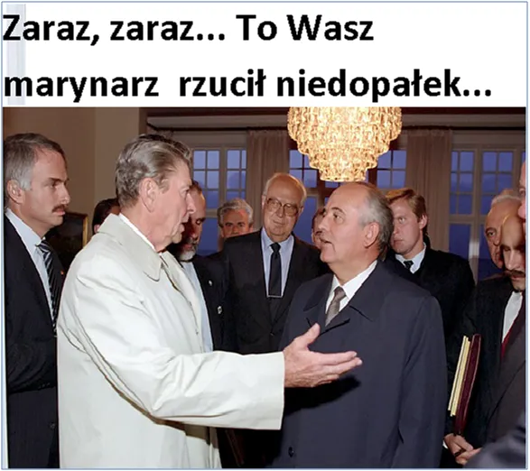
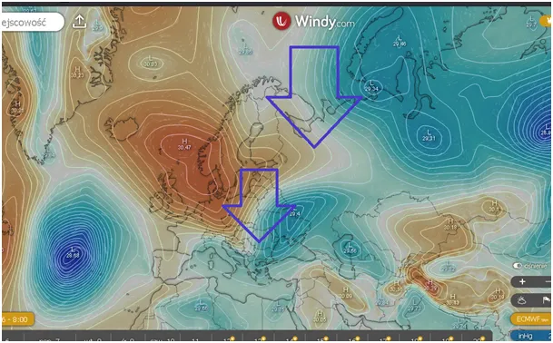
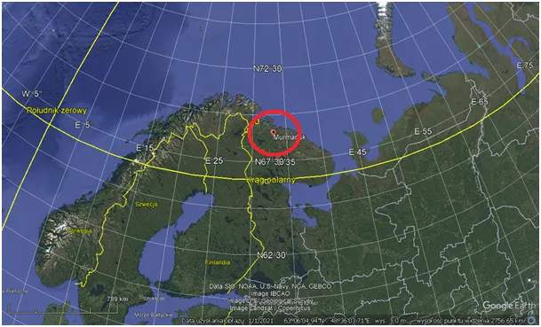
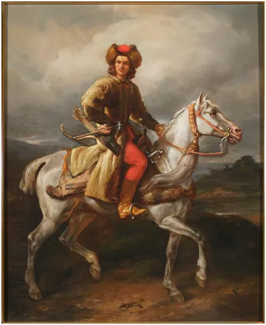

Rosyjska Arktyka wysyła mroźną paczkę na Bliski Wschód albo jak meksykańskie Słońce kształtowało politykę brytyjską w Rosji.
Nasza aura jest zwykle następstwem cyrkulacji atlantyckich, często śródziemnomorskich niżów lub rosyjskich wyżów, ale rzadko zauważamy północne niże. Obecny powrót zimy to skutek właśnie takiej cyrkulacji z dalekiej północy. Klika dni temu w okolicy granicy norwesko-rosyjskiej, nad Morzem Barentsa uformował się głęboki niż spychający masy arktycznego powietrza nad Europę, a za pomocą kolejnego niżu aż nad Azję Mniejszą, czyli do Turcji.

Cyrkulacje te powstają dzięki ciepłym prądom oceanicznym, które docierają na daleką północ, aż z Zatoki Amerykańskiej (Meksykańskiej). Dzięki tym prądom nigdy nie zamarzają tam przybrzeżne porty, w tym port w Murmańsku. Jest to strategiczny port dający Rosji potęgę militarną przez cały rok i swobodne wyjście na oceany świata. Jest on zlokalizowany tuż pod nosem świata zachodniego i jest to niezwykle ważny szlak handlowy. To podczas wojen z Rosją w XVII wieku, oddziały polskich Lisowczyków zapuszczały się w tamte okolice, aby przejąć kontrolę nad eksportem futer i innych skarbów z Rosji do Anglii. Przed brytyjskim rabunkiem Indii Anglicy przez wieki kontrolowali porty na rosyjskiej północy oraz życie polityczne w Rosji, śmierć Iwana Groźnego była relacjonowana w Moskwie jako śmierć "angielskiego cara". Powstała w 1555 brytyjska spółka akcyjna Kompania Moskiewska (ang. Muscovy Company), przestała funkcjonować dopiero w 1917 roku po przejęciu kontroli nad Rosją przez Bolszewików. Ci byli z kolei agendą finansjery skupionej wokół Rezerwy Federalnej USA. Spółka ta miała w Anglii monopol na handel ze wschodem, a jednym z jej celów było przetarcie szlaków morskich przez Ocean Północny do Chin.

Wieki czerpania horrendalnych zysków z rabunku Rosji są powodem obecnych frustracji Londynu nad autonomią Moskwy i wyjaśnia jego stanowisko w konflikcie Rosji z Ukrainą. Inaczej spojrzymy na tamte czasy, gdy przeczytamy zachowany list od oblegających Częstochowę Szwedów do Londynu z prośbą o wypłacenie kolejnej transzy złota dla najemnej, szwedzkiej armii.

Port w Murmańsku jest i był głównym źródłem Rosyjskiej potęgi, a pożar magazynu rakiet balistycznych w jego pobliżu 13 maja 1984 przesądził o upadku Związku Radzieckiego. Sowieci stracili wtedy przewagę w arsenale nuklearnym i już w 1986 roku, w połowie drogi między Rosją i USA, w islandzkim Rejkiawiku Gorbaczow z Reganem rozmawiali o przebudowie świata na modłę amerykańską. Tak dalekosiężne skutki mają prądy oceaniczne. Dziś północne niże wysyłają na południe mroźne wiatry nazywane przez Turków słowiańsko brzmiącym słowem "lodos".
P.s. Sława lekkiej polskie jazdy z XVII wieku dotarła bardzo daleko, w 1655 roku Rembrandt namalował Lisowczyka na koniu, obraz ten dziś wisi w Nowym Yorku i znany jest jako "Jeździec polski".
Paweł Klimczewski